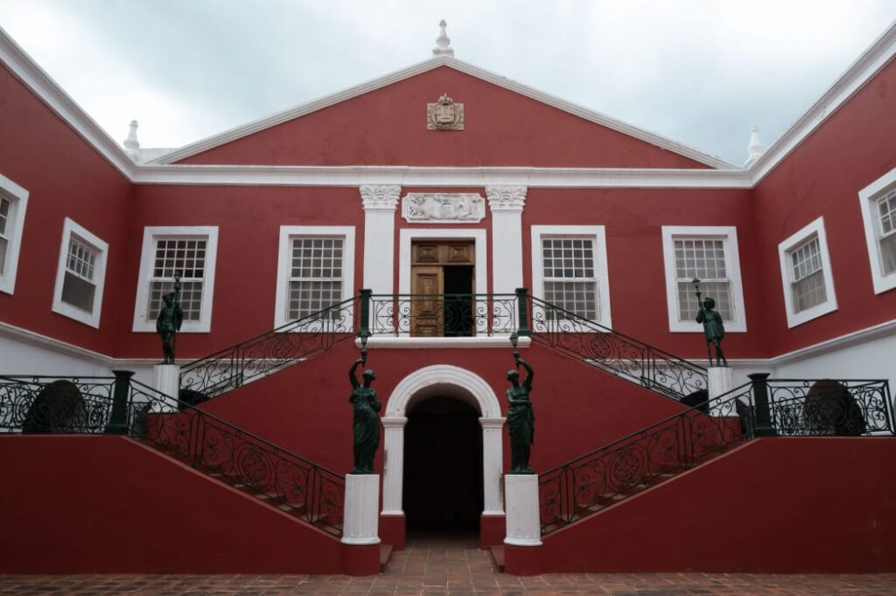
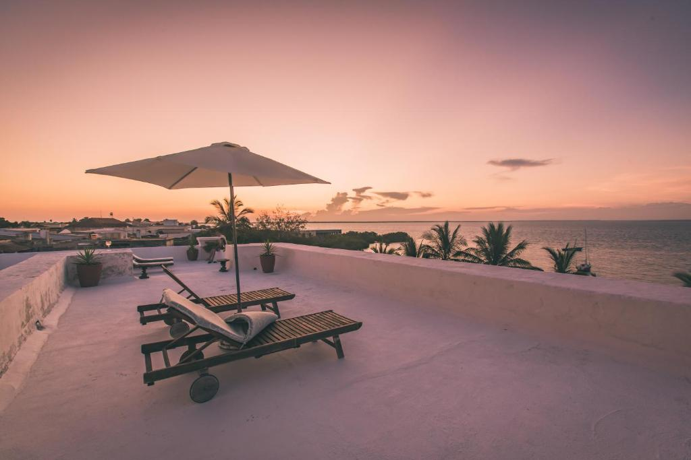
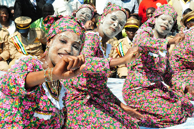
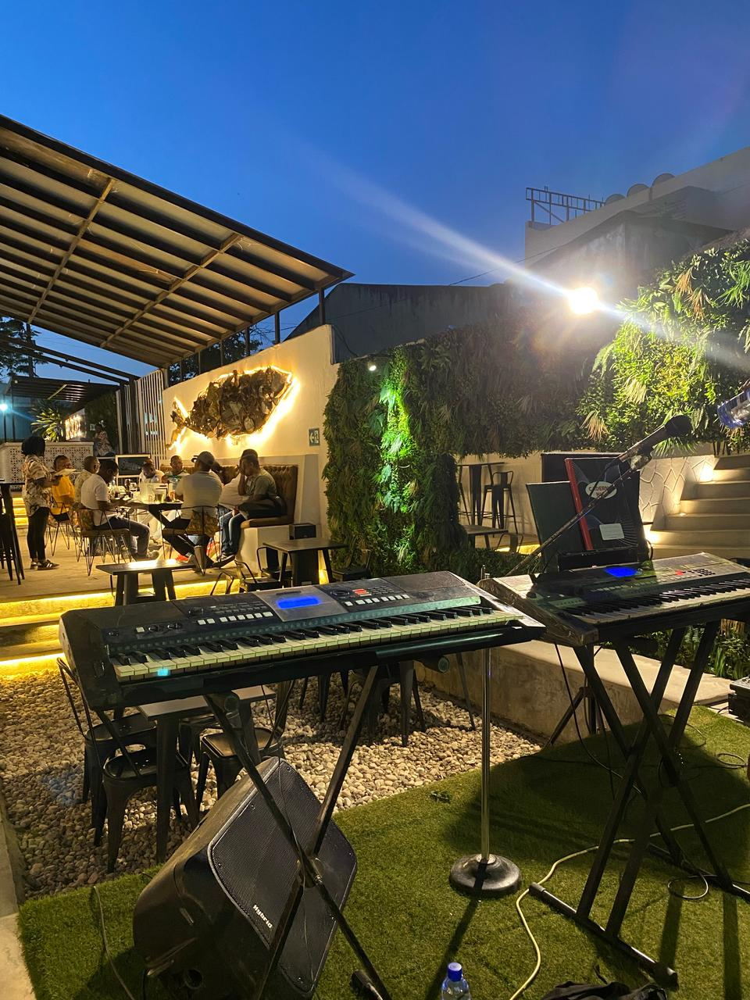
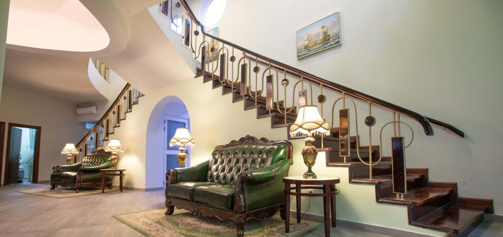

Uma ilha, mil anos de história
A Ilha de Moçambique, joia da Província de Nampula, é um dos lugares mais fascinantes de África. Com apenas 3 km de comprimento, esta pequena ilha guarda em si séculos de civilizações — árabe, suaíli, portuguesa e africana — fundidas numa arquitectura única que encanta o mundo inteiro.
Classificada Património Mundial da UNESCO em 1991, a ilha possui uma densidade histórica raríssima: a mesquita mais antiga da África Austral, fortalezas coloniais, palácios do século XVI e ruas de pedra que sussurram histórias de navegadores e mercadores de especiarias.
Rodeada pelo turquesa do Oceano Índico, com pescadores a partir em dhows ao amanhecer e o cheiro a peixe grelhado a atravessar as ruelas — a Ilha de Moçambique é, acima de tudo, um lugar vivo.

Galeria de Imagens
Uma viagem visual pelos lugares mais deslumbrantes da ilha e arredores
O que Visitar
Os locais imperdíveis da Ilha de Moçambique e arredores de Nampula
Fortaleza de São Sebastião
A maior fortaleza portuguesa construída em África, erguida no século XVI. Imponente, intacta e repleta de história — uma visita obrigatória para quem chega à ilha.
 Museu
Museu
Palácio e Museu de São Paulo
Antiga residência dos governadores e hoje museu de arte sacra, mobiliário indo-português e peças coloniais raras. Um tesouro cultural único em Moçambique.

NaturezaIlhas de Crussi e Jamaili
Duas joias escondidas ao largo de Mossuril, com praias de areia branca intocada, recifes de coral e biodiversidade marinha de excepção. Perfeito para mergulho.

CulturaDança Tufo & Cultura Swahili
A Dança Tufo é expressão artística única da Ilha, de origem árabe, praticada pelas mulheres em festividades. Ver uma apresentação ao vivo é inesquecível.

GastronomiaGastronomia do Índico
Camarão grelhado, peixe fresco, caril de caranguejo e matapa de amendoim — a cozinha da ilha é uma fusão de sabores africanos, árabes e portugueses.

ArquitecturaA Cidade de Pedra e Cal
As ruelas da Cidade de Pedra guardam igrejas barrocas, mesquitas antigas e mansões abandonadas — um labirinto onde cada esquina esconde uma história de séculos.
O Povo da Ilha
A Ilha de Moçambique não é apenas pedra e história — é, sobretudo, o seu povo. Macua, suaíli, árabe e português fundiram-se em gerações de ilhéus que carregam com orgulho uma identidade única no mundo.
Os pescadores partem antes do amanhecer nos seus dhows de vela triangular. As mulheres pintam os rostos com mussiro — pasta branca de raíz local — e conversam à sombra das mangueiras. As crianças mergulham dos cais com sorrisos largos.
Conhecer o povo da ilha é a melhor forma de a entender. Os visitantes são recebidos com uma hospitalidade que é, ela própria, herança de séculos de convivência entre culturas do Índico.
Experiências em Vídeo
Mergulhe na atmosfera da Ilha de Moçambique antes mesmo de chegar
Ilha de Moçambique — Documentário
Um mergulho na história e beleza desta joia do Índico
Informação para Viajantes
Como Chegar
Voo directo para Nampula cidade. 3 horas de estrada até à Ilha de Moçambique. Táxis e transportes colectivos disponíveis na cidade.
Melhor Época
Maio a Outubro (época seca) é o período ideal. Temperaturas amenas 22–30°C. Evite Dezembro–Março durante as chuvas tropicais.
Onde Ficar
Hotéis boutique e casas de hóspedes dentro da Cidade de Pedra, vários com vista ao mar. Reserva antecipada altamente recomendada.
Dicas Locais
Explore as ruelas a pé ao amanhecer. Prove o caril de caranguejo. Leve chapéu e protetor solar. Respeite as comunidades e os espaços sagrados.
Descubra a Ilha de Moçambique
Um lugar único no mundo — onde o Oceano Índico abraça cinco séculos de história, onde o Swahili se mistura com o Português, e onde cada pedra conta uma história. A Ilha de Moçambique aguarda por si.
🏛️ Visite o Nosso Stand na FIKANI 2025
Vilankulo, Inhambane — conheça todos os destinos de Nampula
Nampula — onde o interior encontra o mar.